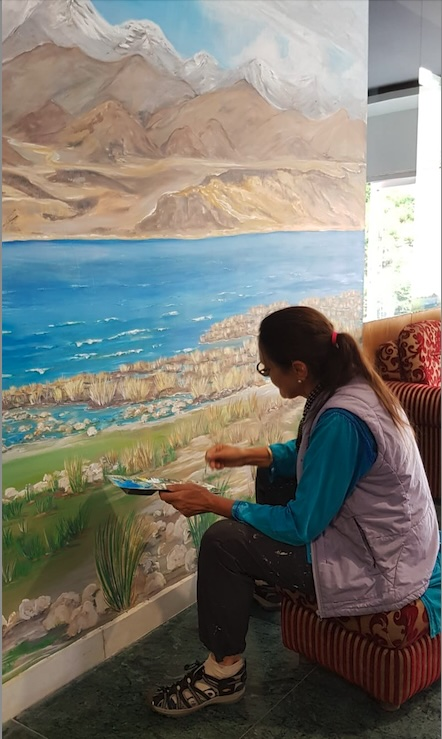

Explore the collections

Children’s Stories
Stories for little ones, with warmth, imagination, and a bit of fun.
Mandela Effect
Reflections on memory, perception, and the stranger side of things.
Dad’s Autobiography
Travel logs and life stories, carefully edited to preserve voice and character.

Poetry
A collection of poems — some thoughtful, some a bit odd, and a few that probably should have stayed in the drawer.

Art
Artwork collected over time, including paintings, creative pieces, and mural projects.
Still putting it together

Photography
A collection of photographs gathered along the way — some better than others.
One day, but not today